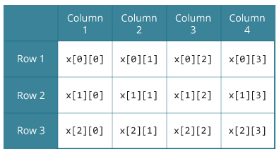

In this article, you will learn to work with multidimensional arrays (two dimensional and three dimensional array).
In C programming, you can create array of an array known as multidimensional array. For example,
float x[3][4];
Here, x is a two-dimensional (2d) array. The array can hold 12 elements. You can think the array as table with 3 row and each row has 4 column.

Similarly, you can declare a three-dimensional (3d) array. For example,
float y[2][4][3];
Here,The array y can hold 24 elements.
You can think this example as: Each 2 elements have 4 elements, which makes 8 elements and each 8 elements can have 3 elements. Hence, the total number of elements is 24.
There is more than one way to initialize a multidimensional array.
// Different ways to initialize two dimensional array
int c[2][3] = {{1, 3, 0}, {-1, 5, 9}};
int c[][3] = {{1, 3, 0}, {-1, 5, 9}};
int c[2][3] = {1, 3, 0, -1, 5, 9};
Above code are three different ways to initialize a two dimensional arrays.
You can initialize a three dimensional array in a similar way like a two dimensional array. Here's an example,
int test[2][3][4] = {
{ {3, 4, 2, 3}, {0, -3, 9, 11}, {23, 12, 23, 2} },
{ {13, 4, 56, 3}, {5, 9, 3, 5}, {3, 1, 4, 9} }
};
// C program to store temperature of two cities for a week and display it.
#include <stdio.h>
const int CITY = 2;
const int WEEK = 7;
int main()
{
int temperature[CITY][WEEK];
for (int i = 0; i < CITY; ++i)
{
for(int j = 0; j < WEEK; ++j)
{
printf("City %d, Day %d: ", i+1, j+1);
scanf("%d", &temperature[i][j]);
}
}
printf("\nDisplaying values: \n\n");
for (int i = 0; i < CITY; ++i)
{
for(int j = 0; j < WEEK; ++j)
{
printf("City %d, Day %d = %d\n", i+1, j+1, temperature[i][j]);
}
}
return 0;
}
Output
City 1, Day 1: 33
City 1, Day 2: 34
City 1, Day 3: 35
City 1, Day 4: 33
City 1, Day 5: 32
City 1, Day 6: 31
City 1, Day 7: 30
City 2, Day 1: 23
City 2, Day 2: 22
City 2, Day 3: 21
City 2, Day 4: 24
City 2, Day 5: 22
City 2, Day 6: 25
City 2, Day 7: 26
Displaying values:
City 1, Day 1 = 33
City 1, Day 2 = 34
City 1, Day 3 = 35
City 1, Day 4 = 33
City 1, Day 5 = 32
City 1, Day 6 = 31
City 1, Day 7 = 30
City 2, Day 1 = 23
City 2, Day 2 = 22
City 2, Day 3 = 21
City 2, Day 4 = 24
City 2, Day 5 = 22
City 2, Day 6 = 25
City 2, Day 7 = 26
// C program to find the sum of two matrices of order 2*2
#include <stdio.h>
int main()
{
float a[2][2], b[2][2], c[2][2];
int i, j;
// Taking input using nested for loop
printf("Enter elements of 1st matrix\n");
for(i=0; i<2; ++i)
for(j=0; j<2; ++j)
{
printf("Enter a%d%d: ", i+1, j+1);
scanf("%f", &a[i][j]);
}
// Taking input using nested for loop
printf("Enter elements of 2nd matrix\n");
for(i=0; i<2; ++i)
for(j=0; j<2; ++j)
{
printf("Enter b%d%d: ", i+1, j+1);
scanf("%f", &b[i][j]);
}
// adding corresponding elements of two arrays
for(i=0; i<2; ++i)
for(j=0; j<2; ++j)
{
c[i][j] = a[i][j] + b[i][j];
}
// Displaying the sum
printf("\nSum Of Matrix:");
for(i=0; i<2; ++i)
for(j=0; j<2; ++j)
{
printf("%.1f\t", c[i][j]);
if(j==1)
printf("\n");
}
return 0;
}
Ouput
Enter elements of 1st matrix
Enter a11: 2;
Enter a12: 0.5;
Enter a21: -1.1;
Enter a22: 2;
Enter elements of 2nd matrix
Enter b11: 0.2;
Enter b12: 0;
Enter b21: 0.23;
Enter b22: 23;
Sum Of Matrix:
2.2 0.5
-0.9 25.0
// C Program to store and print 12 values entered by the user
#include <stdio.h>
int main()
{
int i, j, k, test[2][3][2];
printf("Enter 12 values: \n");
for(i = 0; i < 2; ++i)
{
for (j = 0; j < 3; ++j)
{
for(k = 0; k < 2; ++k )
{
scanf("%d", &test[i][j][k]);
}
}
}
// Printing values with proper index.
printf("\nDisplaying values:\n");
for(i = 0; i < 2; ++i)
{
for (j = 0; j < 3; ++j)
{
for(k = 0; k < 2; ++k )
{
printf("test[%d][%d][%d] = %d\n", i, j, k, test[i][j][k]);
}
}
}
return 0;
}
Output
Enter 12 values:
1
2
3
4
5
6
7
8
9
10
11
12
Displaying Values:
test[0][0][0] = 1
test[0][0][1] = 2
test[0][1][0] = 3
test[0][1][1] = 4
test[0][2][0] = 5
test[0][2][1] = 6
test[1][0][0] = 7
test[1][0][1] = 8
test[1][1][0] = 9
test[1][1][1] = 10
test[1][2][0] = 11
test[1][2][1] = 12